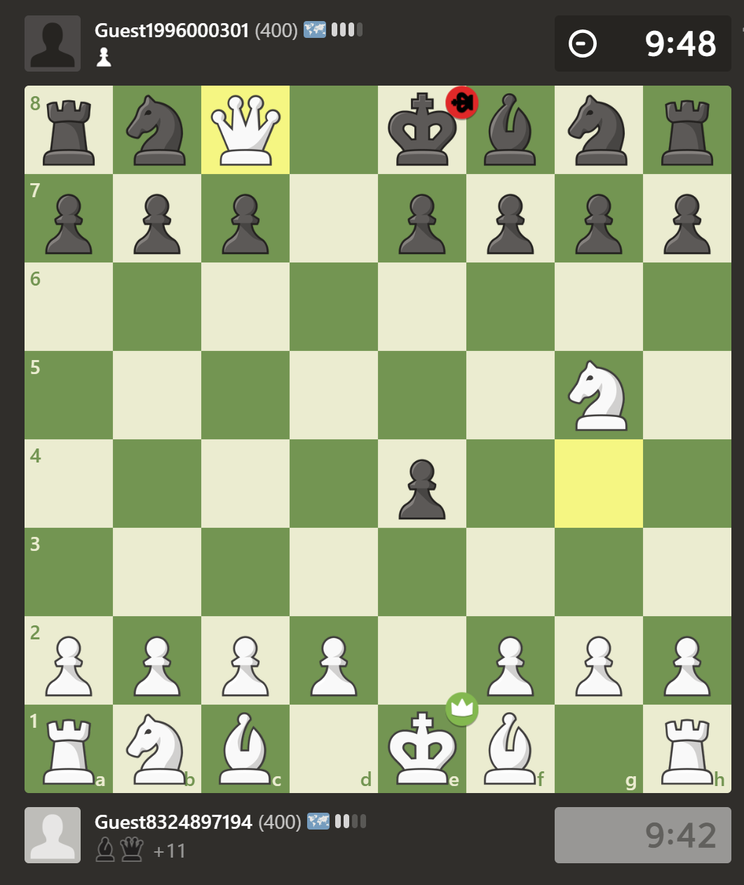

Learn simple and defensive chess openings such as the Ruy Lopez Opening, the Four Knight Game, and Scotch Game.
Become skilled at applying traps such as the Tennison Gambit, the Wayward Queen Attack, Scholar's Mate, and the Bishop's Opening: Urusov Gambit. Learn to recognize these traps and respond in a proper way when these traps are used against you.
Always push your d and e pawns! Develop your knights and bishops whenever appropriate! You do NOT want a weak center. Protect your d and e pawns whenever possible.
The fanciest thing your opponents will play at this stage is a c7 knight fork of the rook and king. If you castle, your opponents cannot fork and they will NOT know how to respond.
A Queen is 9 pts, a Rook is 5 pts, Bishops and Knights are 3 pts, while Pawns are 1 pts. When trading, you have to calculate the amount of pieces attacking, and pieces defending! If it's equal, the side that moves their piece offensively first is the side that'll lose and create a material disadvantage for their side! BE CAREFUL OF THIS!
The best way to get better at chess is to play chess! Don't sweat losing too much - noobs at this level are usually pretty bad at chess, so you can usually win games if you play well. Play online at Chess.com or Lichess.org for free! See a sample game below!
 Return to Home Page